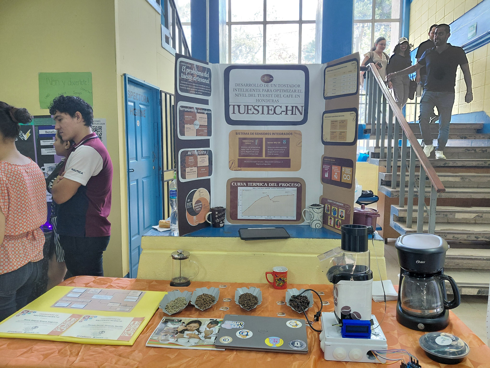
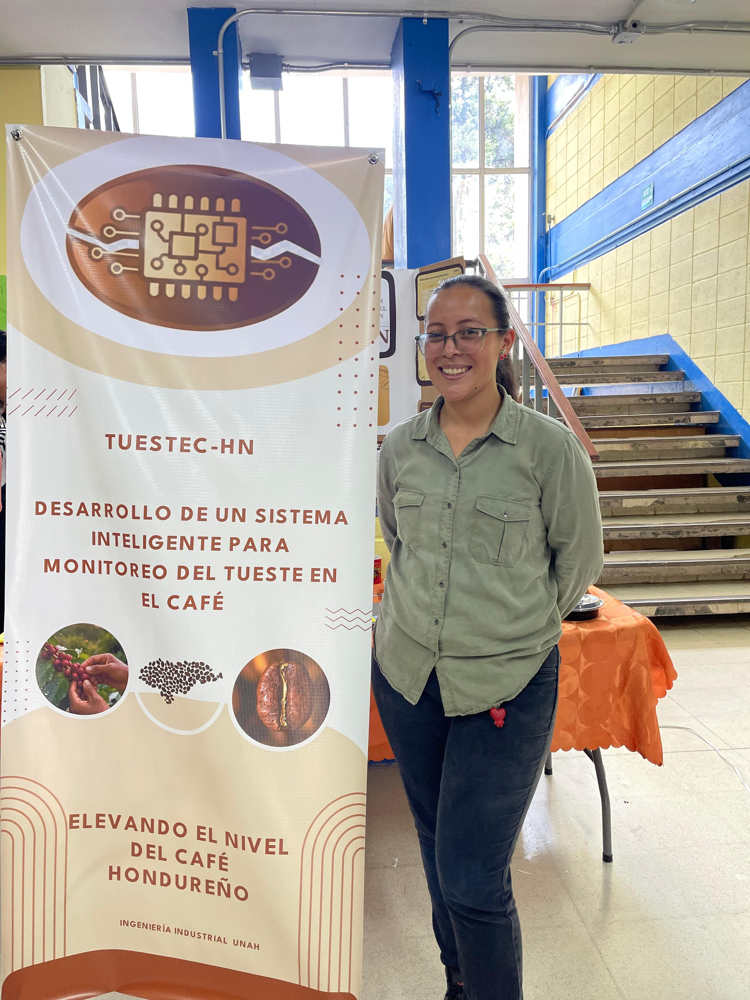

Elevando el nivel del café hondureño
Tuestec-HN es una iniciativa innovadora fundada por Rosio Raquel Rivera y Moisés Miranda en el marco de la carrera de Ingeniería Industrial de la Universidad Nacional Autónoma de Honduras (UNAH). El proyecto nace con el firme propósito de solucionar los problemas del tueste artesanal mediante la tecnología, asegurando un control óptimo de calidad en cada grano.
Para mitigar los riesgos del tueste empírico y estandarizar la producción, el proyecto implementa un desarrollo tecnológico avanzado:
Uso de termocuplas industriales para medir la temperatura exacta en tiempo real dentro del tostador inteligente, registrando de forma precisa la curva térmica del proceso.
Desarrollo de un sistema inteligente enfocado en optimizar el tiempo, la temperatura y la homogeneidad del tueste del café en Honduras.
A continuación se muestran las imágenes de la presentación oficial del prototipo y del material visual desarrollado para la exposición del tostador inteligente:

Presentación del proyecto y prototipo de sensores

Banner Informativo - Ingeniería Industrial UNAH